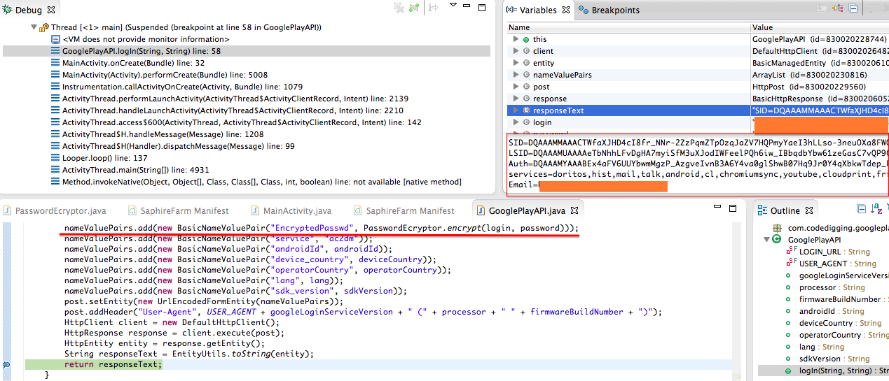

Just a quick word about EncryptedPasswd parameter. Sniffing traffic between an Android device and Google Play, one can see that login to Google Play is just a POST request like this:
POST /auth HTTP/1.1
Content-Type: application/x-www-form-urlencoded
Content-Length: 404
Host: android.clients.google.com
Connection: Keep-Alive
User-Agent: GoogleLoginService/1.3 (a10 JZO54K)
accountType=HOSTED_OR_GOOGLE&Email=testemail%40gmail.com&has_permission=1&add_account=1&EncryptedPasswd=AFcb4KS9WAU3NI_-jdMDSueqT-oO1-WN2B9pxB-te_Elx3MElC9B2TgAaWqkY7kiQSnGFEwaY1KVkizxadGsRnFnHa7vlRCrB4Me1XnHBuOz9oi48eBcm0rC7r8QaC_GPp1YPI8OFa0fZU_dTJypganc2tREsgE-_TJQSKWkA7zSWnsq8g%3D%3D&service=ac2dm&source=android&androidId=378b05ab23e0e8e9&device_country=ua&operatorCountry=ua&lang=en&sdk_version=16
The request headers and parameters are more or less clear, except EncryptedPasswd parameter. Google search gives nothing useful, Chinese RCE forums contain no information about the parameter, even Adam Goodman did not explain the parameter in his great research on bypassing Google’s two-factor authentication. Adam just wrote
Another of Elenkov’s blog posts led us to believe that
EncryptedPasswdmight be our ASP, encrypted with a 1024-bit RSA public key included in the Android system. EncryptedPasswd was, in fact, 130 bytes of (base64-encoded) binary data, so this seems quite possible.
and replaced EncryptedPasswd with a plain-text Passwd parameter. That replacement worked for Adam and it’s great, but what’s the hell is EncryptedPasswd? To clarify this, I’ve reversed com.google.android.gsf.loginservice.PasswordEncrypter class in com.google.android.gsf.login. As result, I got the following Java code:
// The Google public key
private static final String googleDefaultPublicKey = "AAAAgMom/1a/v0lblO2Ubrt60J2gcuXSljGFQXgcyZWveWLEwo6prwgi3iJIZdodyhKZQrNWp5nKJ3srRXcUW+F1BD3baEVGcmEgqaLZUNBjm057pKRI16kB0YppeGx5qIQ5QjKzsR8ETQbKLNWgRY0QRNVz34kMJR3P/LgHax/6rmf5AAAAAwEAAQ==";
// In:
// login - your mail, should looks like myemail@gmail.com
// password - your password
// Out:
// a base64 string containing the encrypted password
// !!!!!!!!!!!!!!!!!!!!!!!!!!!!!!!!!!!!!!!!!!!!!!!!!!!!!!!!!!!!!!!!!!!!!!!!!!!!
// WARNING!!! THE CODE WORKS CORRECTLY ONLY IF THE LENGTH OF login+password
// IS LESS THAT 80 CHARS (YES, DO NOT CHECK IT IN THE METHOD, I'M A CRAPPY
// JAVA CODER :))
// !!!!!!!!!!!!!!!!!!!!!!!!!!!!!!!!!!!!!!!!!!!!!!!!!!!!!!!!!!!!!!!!!!!!!!!!!!!!
@SuppressWarnings("static-access")
public static String encrypt(String login, String password)
throws NoSuchAlgorithmException, InvalidKeySpecException,
NoSuchPaddingException, UnsupportedEncodingException,
InvalidKeyException, IllegalBlockSizeException,
BadPaddingException {
// First of all, let's convert Google login public key from base64
// to PublicKey, and then calculate SHA-1 of the key:
// 1. Converting Google login public key from base64 to byte[]
byte[] binaryKey = Base64.decode(googleDefaultPublicKey, 0);
// 2. Calculating the first BigInteger
int i = readInt(binaryKey, 0);
byte [] half = new byte[i];
System.arraycopy(binaryKey, 4, half, 0, i);
BigInteger firstKeyInteger = new BigInteger(1, half);
// 3. Calculating the second BigInteger
int j = readInt(binaryKey, i + 4);
half = new byte[j];
System.arraycopy(binaryKey, i + 8, half, 0, j);
BigInteger secondKeyInteger = new BigInteger(1, half);
// 4. Let's calculate SHA-1 of the public key, and put it to signature[]:
// signature[0] = 0 (always 0!)
// signature[1...4] = first 4 bytes of SHA-1 of the public key
byte[] sha1 = MessageDigest.getInstance("SHA-1").digest(binaryKey);
byte[] signature = new byte[5];
signature[0] = 0;
System.arraycopy(sha1, 0, signature, 1, 4);
// 5. Use the BigInteger's (see calculations above) to generate
// a PublicKey object
PublicKey publicKey = KeyFactory.getInstance("RSA").
generatePublic(new RSAPublicKeySpec(firstKeyInteger, secondKeyInteger));
// It's time to encrypt our password:
// 1. Let's create Cipher:
Cipher cipher = Cipher.getInstance("RSA/ECB/OAEPWITHSHA1ANDMGF1PADDING");
// 2. Then concatenate the login and password (use "\u0000" as a separator):
String combined = login + "\u0000" + password;
// 3. Then converting the string to bytes
byte[] plain = combined.getBytes("UTF-8");
// 4. and encrypt the bytes with the public key:
cipher.init(cipher.PUBLIC_KEY, publicKey);
byte[] encrypted = cipher.doFinal(plain);
// 5. Add the result to a byte array output[] of 133 bytes length:
// output[0] = 0 (always 0!)
// output[1...4] = first 4 bytes of SHA-1 of the public key
// output[5...132] = encrypted login+password ("\u0000" is used as a separator)
byte[] output = new byte [133];
System.arraycopy(signature, 0, output, 0, signature.length);
System.arraycopy(encrypted, 0, output, signature.length, encrypted.length);
// Done! Just encrypt the result as base64 string and return it
return Base64.encodeToString(output, Base64.URL_SAFE + Base64.NO_WRAP);
}
// Aux. method, it takes 4 bytes from a byte array and turns the bytes to int
private static int readInt(byte[] arrayOfByte, int start) {
return 0x0 | (0xFF & arrayOfByte[start]) << 24 | (0xFF & arrayOfByte[(start + 1)]) << 16 | (0xFF & arrayOfByte[(start + 2)]) << 8 | 0xFF & arrayOfByte[(start + 3)];
}
Well, the code is ugly, but it works. Google servers answer with SID, LSID, Auth and all that funny authorization stuff. Here is a proof screen from my Eclipse IDE:

So it goes.
Commenting is not available in this blog, but you can write me a letter or message.
Prev: CVE-2014-1354: how to find a critical bug in iOS